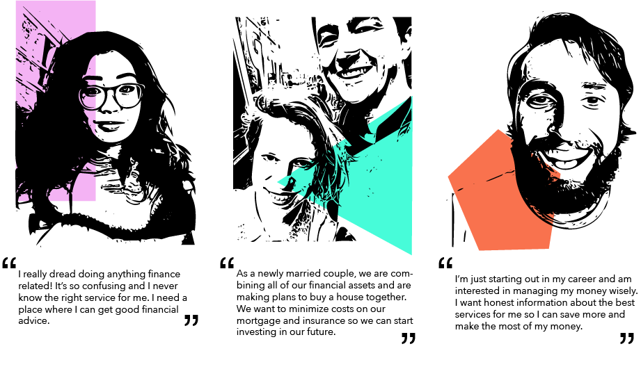
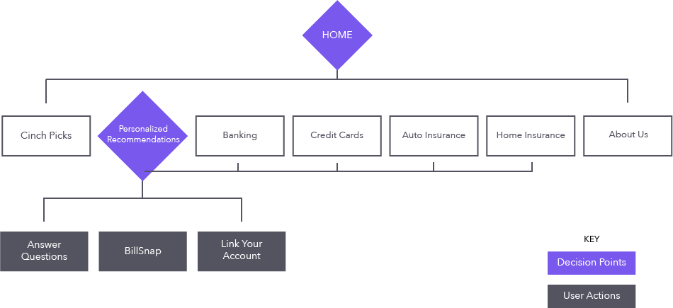
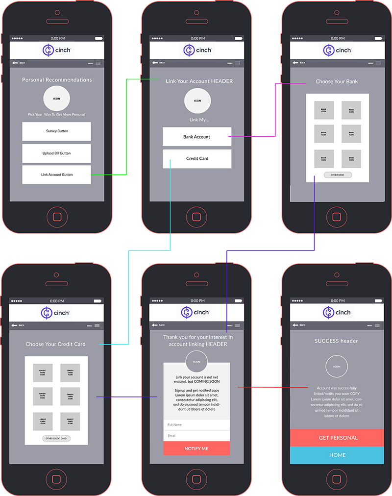

THE CLIENT
Cinch Financial is a small financial tech startup. They have curated a list of the best financial products to make finding good financial services easier for the consumer.
THE CHALLENGE
Cinch offers various ways of accessing their curated list. These include simply reading the list of serices and products (Cinch Picks), taking a short survey to get more personalized recommendations, or sending Cinch a copy of your bill in return for a specific recommendation (BillSnap). For Cinch to give the best recommendation, they need as much information about your current financial situation as possible.
Cinch put my small cross-functional consulting team up to the task of improving the user experience of the site and working towards driving more users to engage with the site’s offerings.
THE SOLUTION
My team suggested adding an account linking feature that would allow users to link their financial accounts to their Cinch account, and ultimately receive the best financial advice and recommendations.
We reached this solution through several interviews with the target audience as well as online surveys, which all indicated users would be interested in linking their respective financial accounts to a "Cinch Account."
Even before tackling the design of the account-linking feature, I first decided that the home page could benefit from a clearer presentation of the various modes of accessing the Cinch Picks. Previously, Cinch's home page had a navigation bar which provided links to each type of service for which they have curated lists (Banking, Credit, etc...), a small introduction panel, and a large section linking to BillSnap. This layout wasn't communicating all that Cinch has to offer a user. Some site-mapping revealed various access points to the "personilization" methods throughout the site, so these interactions were being overlooked. To address this problem, I seperated the "personalization" methods from the Cinch Picks to create a sense of hierarchy and bring these interactions to the user's attention.
Beacuse the account-linking was a brand new feature and Cinch didn't have a lot of previous user and/or usability stats, I based my design off of personas of Cinch's target users. Cinch's target user is one that isn't interested in spending hours researching financial services; perhaps, they even find the process annoying or confusing. I focused on creating a simple and straighfoward experience that suits the personas and that can be easily built upon by the Cinch team in the future. I streamlined the interface design with the site’s existing aesthetic, and used conversational phrasing of prompts to reflect Cinch's self-proclaimed nature of being your "friendly financial advisor who is on your side." In the end, I delivered a prototype of the interface and experience for user testing that is fully functional and responsive.
PERSONAS
SITEMAP
WIREFRAME
PROTOTYPE
click image for the cinch prototype experience